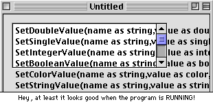

As I mentioned in the news this month, DR2r70 sported a new button next to every string property that lets you type in a value in a dialog identical to the "Edit List" one. Howevere, you don't need r70 to do this.
In any version of RB, from DR1 on up, you can type up some text in a word processor, like SimpleText, and copy them. Then, select the property, and paste the text in. It can be as long as you want, and have as many line breaks as you need. The window editor won't display it properly, but it looks great when you run the program.
